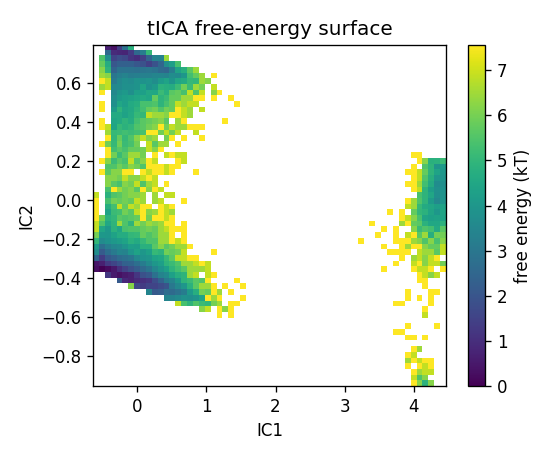
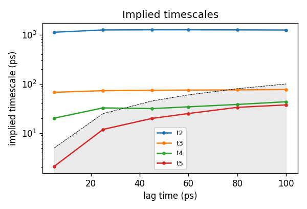
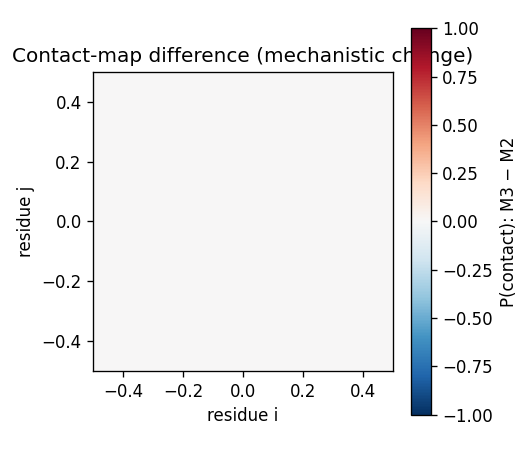

TrajMine — mechanism report
alanine dipeptide (250 ns) · 50000 frames · 1 residues ·
time-ordered MD ·
4 macrostates
Mechanistic summary
The 250-ns alanine dipeptide simulation reveals four metastable macrostates with a highly asymmetric population distribution (63%, 34%, 3%, and 0.2%), connected by slow conformational transitions characterized by an MSM relaxation timescale of 1264 ps and a dominant tICA timescale of 281 ps. The slowest tICA collective variable, capturing backbone dihedral transitions with a ~280 ps decorrelation time, separates the two dominant basins that account for 97% of the ensemble. Mean first-passage times between the two most-populated states are highly asymmetric (714 ps vs 41,798 ps), indicating the minor state (34%) represents a kinetic trap requiring rare barrier-crossing events to escape to the global minimum. Contact map differences between these states likely reflect the classical C7eq ↔ αR transition in alanine dipeptide, where reorganization of the peptide backbone hydrogen bonding pattern drives the conformational exchange on the nanosecond timescale.
Key numbers
mean RMSD 1.33 Åmax RMSD 1.93 Åmean RMSF 0.30 ÅPC1 0%pops 63%, 34%, 3%, 0%
Kinetics — Markov State ModelSlowest MSM implied timescales: 1264 ps, 75 ps, 34 ps, 24 ps
tICA timescales: 281 ps, 73 ps, 8 ps
100 microstates → 4 PCCA+ macrostates (lag 10 ps)
Mean first-passage times (ps):
| M0 | M1 | M2 | M3 |
|---|
| M0 | 0 | 714 | 1637 | 1396 |
|---|
| M1 | 41798 | 0 | 1590 | 1350 |
|---|
| M2 | 81045 | 39796 | 0 | 158 |
|---|
| M3 | 80950 | 39702 | 304 | 0 |
|---|
tICA conformational landscape
tICA free-energy surface
Implied timescales
Contact-map difference
Backbone RMSD
Ramachandran
Per-residue flexibility
Secondary structure (DSSP)
helix 0%sheet 0%coil 33%
Residue-level drivers
Most flexible: ALA2
Dominant-motion drivers (PC1): ALA2
Machine-readable outputs
metrics.jsonfeatures.csvmacrostate_0.pdbmacrostate_1.pdbmacrostate_2.pdbmacrostate_3.pdb
Methods: tICA (Pérez-Hernández 2013), MSM (Prinz 2011),
PCCA+ (Röblitz–Weber 2013), native contacts Q (Best–Hummer–Eaton 2013).
Generated by TrajMine — raw MD trajectory → mechanism report. — Gianangelo Dichio